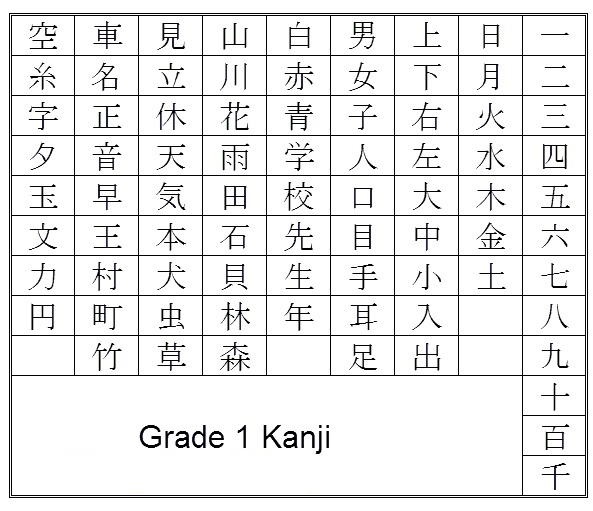

Kanji (漢字) - Chinese characters script, is one component of Japanese Writing System.
Kanji is used to describe most Noun, Verb, Adjective and used for naming,...
Kanji is a complex system. Each Kanji character has its own meaning and various pronunciations. There are SO MANYYY Kanji Characters out there. I cannot mention all of them in a simple web page! If you want to know more about Kanji, please ask Google-sama!
Here is some simple Kanji character:
